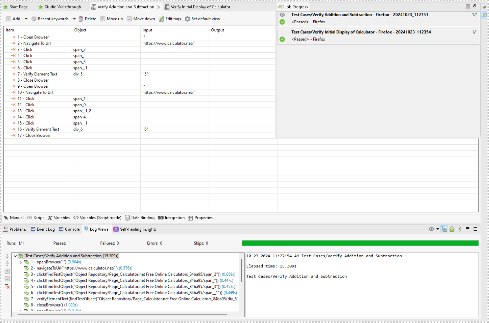
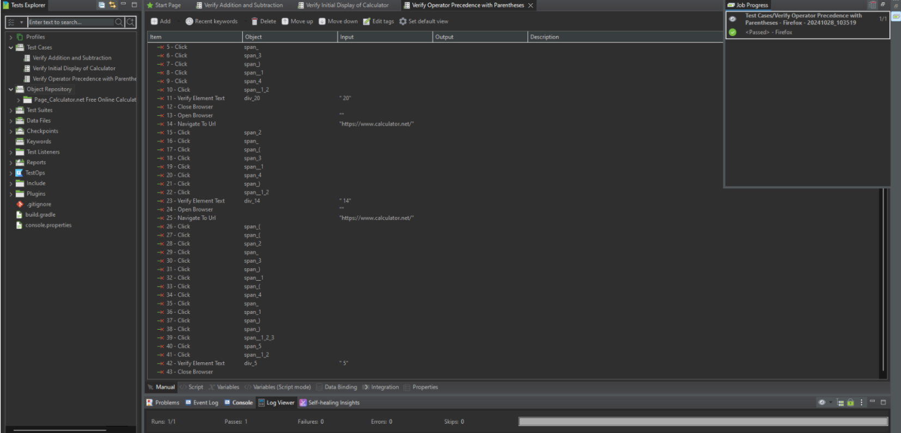
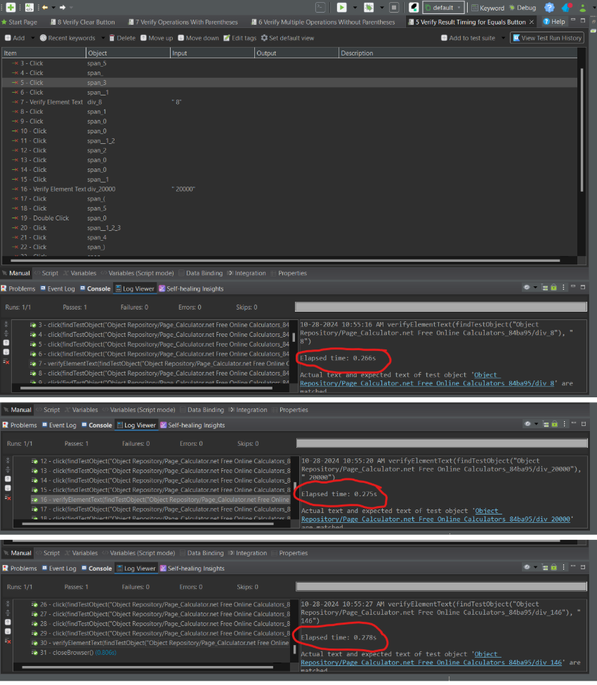
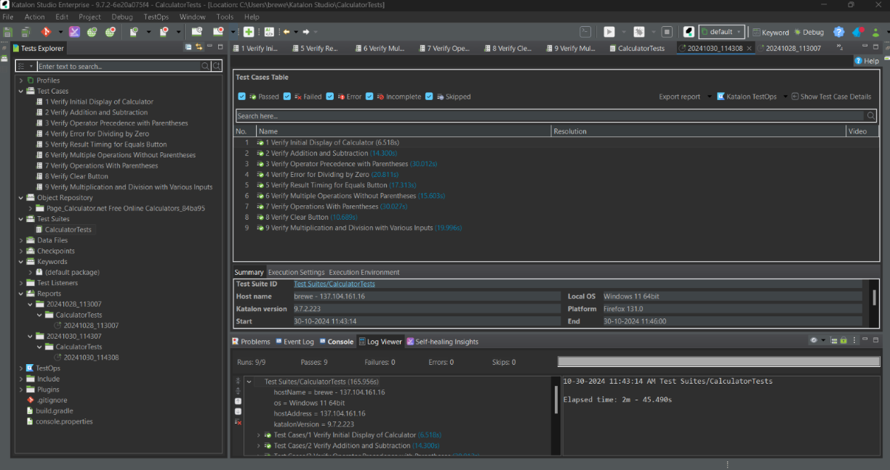

Description: This project involved creating a test plan to verify the functionality and quality of a web-based calculator. The focus was on validating arithmetic operations, operator precedence, error handling, and performance.
Technologies Used: Web-based Calculator Application, Manual Testing Techniques
Key Features:
My Role: Designed and executed test cases, documented results, and analyzed system performance.
Outcome: Delivered a detailed test report outlining test results and compliance with requirements.
Below are visuals showcasing the testing process for the Calculator application:
Description: This image demonstrates the test case for verifying addition and subtraction on the calculator.
Description: Shows the interface and steps involved in validating operator precedence with parentheses.
Description: Displays the log viewer and timing results for test executions verifying various operations.
Description: Summary of the executed test cases, showing detailed results and overall completion status.